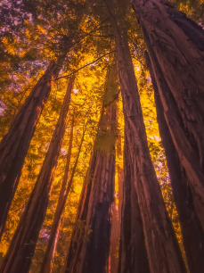

I am voracious for gained insight as my greatest thrill is striking out into the unknown and grasping what lies beyond. I have an urban heart with a backwoods frontier soul. I was raised in Chicago but have a penchant for exploring the isolated and less understood areas of our globe. For the past several years, I have been organizing and participating in world class expeditions that have brought me to some of the most remote places on Earth.
My livelihood has often depended on my equipment. I understand what it means to have your life be dependent on proper functionality. I’ve had the opportunity to intimately explore over seventy countries across every continent with years long residence in Japan, Hong Kong, India, Russia, Europe and Antarctica. I’ve been hunting for the exceptional as I am the scavenger. Every place, rife with inspiration and reward. I bring what I have witnessed and offer it to you.
UX is my purpose and my intention is to bring an intuitive and joyous experience to the masses through intangible digital means. As time is a resource that is in the highest demand, it is my goal to influence the world by making the complex more intuitive. I believe good design promotes well-being. I dream of a future where all beings have equal potential to lead fulfilling lives. I believe Silicon Valley shares my perspective and that is why I currently call Palo Alto home. Great design is intrinsically good for all.
Skills
- ‣ Figma
- ‣ Github
- ‣ HTML
- ‣ Javascript
Interests
- ‣ Antique Restoration
- ‣ Geocaching
- ‣ Redwood Trees
- ‣ Japanese History
- ‣ Super Nintendo
- ‣ American Roots Music
Education
- B.A. in Musical Instrument Design
- and Zuni Farming Techniques
- University of Redlands - 2007-2012
- Teaching English as a Forighn Language
- Kathmandu, Nepal
- Wilderness First Responder
- Survival Medicine
- NOLS
- Portland, OR
- UX Designer Track
- Bloc, 2018-2019